Topology#
Topological band theory: SSH edge states and the Zak phase, exactly quantized Chern numbers (TKNN), the Haldane model’s zero-net-flux Chern insulator and its chiral edge states, unpaired Majorana zero modes in the Kitaev chain, graphene’s massless Dirac cone, and the Kane-Mele/BHZ \(\mathbb{Z}_2\) topological insulators.
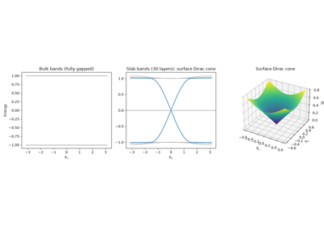
The 3D Topological Insulator: A Single Surface Dirac Cone
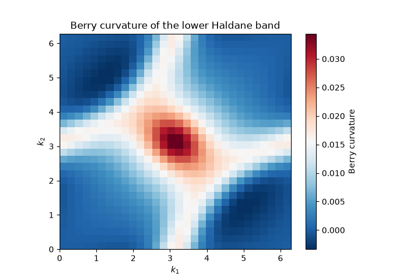
The TKNN Invariant: Exactly Quantized Chern Numbers
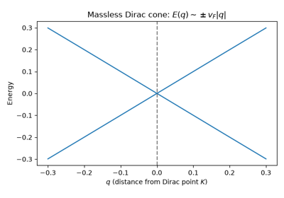
Graphene: A Massless Dirac Cone on a Honeycomb Lattice
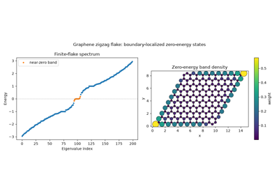
Graphene: Zero-Energy Edge States on a Zigzag-Terminated Flake
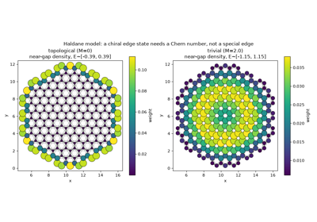
The Haldane Model: a Chiral Edge State on an Arbitrary Boundary
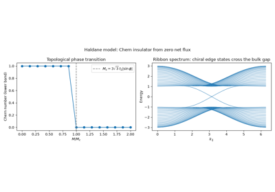
The Haldane Model: A Chern Insulator with Zero Net Flux
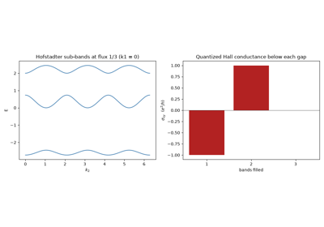
The Integer Quantum Hall Effect: Quantized Hall Conductance from Chern Numbers
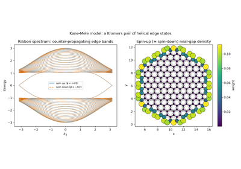
Kane-Mele: Helical Edge States from Two Time-Reversed Haldane Copies
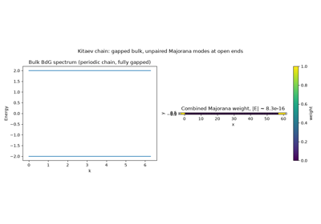
The Kitaev Chain: Unpaired Majorana Zero Modes
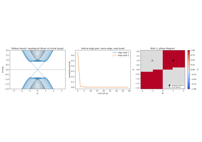
Quantum Spin Hall Effect: Konig et al.’s Helical Edge States
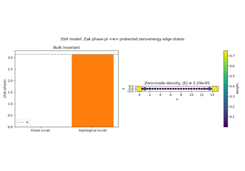
The SSH Model: Zak Phase and Protected Edge States
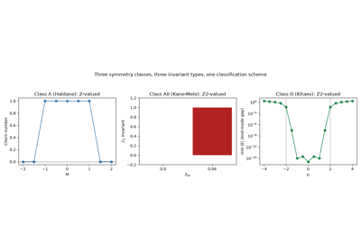
The Tenfold Way: Three Topological Invariants, One Classification Scheme
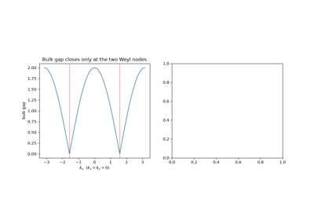
Weyl Semimetals: Momentum-Space Monopoles and Fermi Arcs
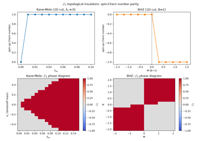
Kane-Mele and BHZ: Z2 Topological Insulators